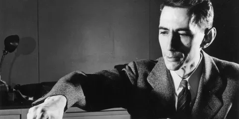
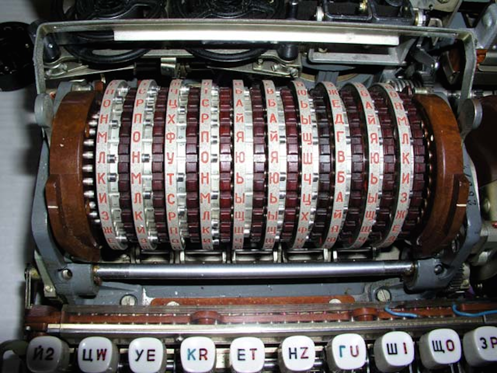
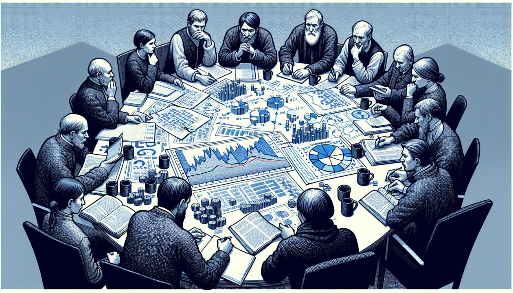

Клод Шеннон внёс вклад в разные области: теорию информации, криптографию, теорию игр и вычислительную технику. Его работы стали основой для современных теорий и техник обработки, передачи и хранения информации.
Теория информации
Публикация статьи «Математическая теория связи» (1948), которая сделала Шеннона всемирно известным. В работе изложены идеи, ставшие основой теории и техники обработки, передачи и хранения информации. Некоторые достижения:
Введён термин информационной энтропии как меры неопределённости сообщений.
Определён бит как количество полученной информации при нахождении ответа на вопрос, в котором возможны только два варианта ответа (например, «да» или «нет»), причём оба — с одинаковой вероятностью.
Описана идеальная схема передачи данных через зашумлённый канал и установлены фундаментальные границы кодирования и восстановления информации.

Криптография
Публикация статьи «Теория связи в секретных системах» (1949), которая впервые сформулировала теоретические основы криптографии. Шеннон доказал существование абсолютно стойких, невскрываемых шифров и сформулировал условия, необходимые для этого.
Введение понятий перемешивания и рассеивания, а также методов создания криптостойких систем шифрования на основе простых операций.

Теория игр
Предложение стратегий поиска оптимального хода в шахматах — Шеннон одним из первых предложил стратегии, основанные либо на полном переборе, либо на эвристических сокращениях. Это предвосхитило будущие алгоритмы компьютерных шахмат.
Создание машины, которая «читала мысли» при игре в «монетку»: человек загадывал «орёл» или «решку», а машина отгадывала с вероятностью выше 1/2.

Вычислительная техника
Появление оригинального способа организации релейных цепей, позволяющего сократить количество контактов. Работа Шеннона «Организация двухполюсных переключающих цепей» стала новым вкладом в схемотехнику.
В 1942 году Шеннон предложил концепцию сигнальных графов, а также вывел предел усиления для аналоговых вычислительных устройств.
Заложил основу проектирования цифровых схем — представление «истинного» и «ложного», нуля и единицы, в виде разомкнутых или замкнутых переключателей, а также использование электронных логических ворот для выполнения арифметических действий легли в основу устройства цифровых компьютеров.